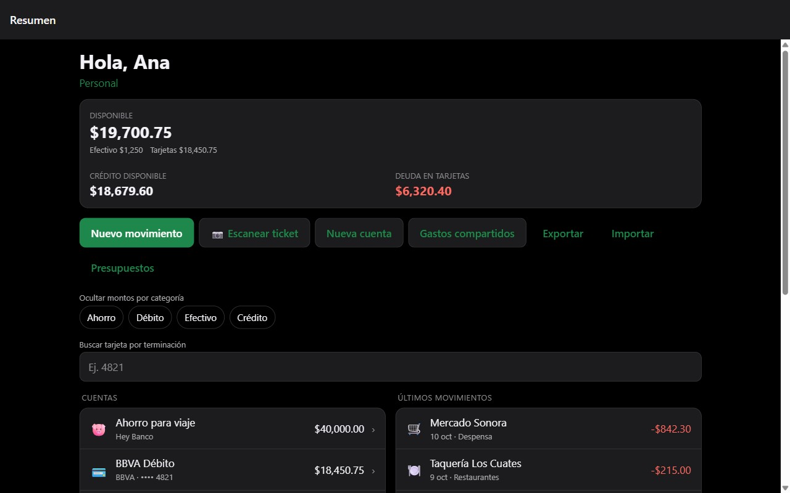
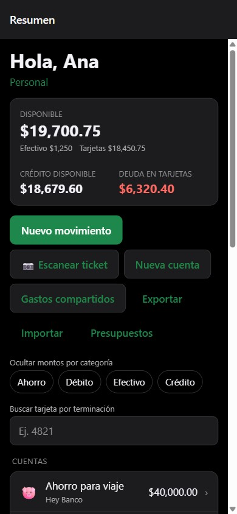

Siete apps enfocadas, una sola cuenta.
Cada app resuelve una sola cosa muy bien, para negocio o vida personal. Úsalas por separado o conéctalas entre sí cuando tenga sentido — nunca es obligatorio.
Saber quién tiene qué, y desde cuándo.
Control de equipos y objetos de valor, de negocio o personales: quién los tiene, en qué estado, y todo su historial, con firma digital de respaldo.
- Firma digital como comprobante de entrega
- Avisos de garantía, mantenimiento y equipo sin uso
- Historial completo de cada equipo
Próximamente en App Store, Google Play y versión web.
Nunca se te pase cobrarle a un cliente.
Controla quién te paga de forma recurrente — mensual, semestral o anual — y no pierdas de vista a quién ya le facturaste ni a quién le toca cortarle el acceso.
- Pagado y facturado, seguidos por separado
- Recordatorio de WhatsApp ya redactado
- Resumen de ingresos por negocio
Próximamente en App Store, Google Play y versión web.
Todo lo que pagas de forma recurrente, en un vistazo.
Streaming, software, membresías y licencias: Xíimbal te avisa antes de cada cobro y te alerta si algo empezó a costarte más de lo que debería.
- Aviso antes de cada renovación, con foco en pruebas gratuitas
- Alerta cuando el precio de algo sube
- Historial de costo por suscripción a lo largo del tiempo
Próximamente en App Store, Google Play y versión web.
El control de tus gastos e ingresos, siempre al día.
Lleva el registro de lo que ganas y lo que gastas, personal o de negocio, y recibe automáticamente lo que confirmes en otras apps de la suite.
- Ingresos y gastos personales o de negocio
- Se alimenta de Koolcollect y Xíimbal automáticamente
- Saldos y movimientos siempre actualizados
Próximamente en App Store, Google Play y versión web.


Listas de compras en equipo, sin duplicar ni olvidar.
Familia, roomies o un negocio pequeño: cualquiera anota, un capitán aprueba, y la app aprende tu forma de comprar con el tiempo.
- Cualquiera anota, un capitán aprueba
- Escaneo de código de barras en tienda
- Aprende tu orden de compra y sugiere recetas
Próximamente en App Store, Google Play y versión web.
El panorama completo de tu negocio, de un vistazo.
Ventas, gastos, saldos y comparación entre varios negocios — se alimenta solo de lo que ya registraste en Taan Wallet y Koolcollect.
- Resumen de ventas, gastos e ingresos
- Compara el rendimiento entre varios negocios
- Exporta reportes en PDF o Excel
Próximamente en App Store, Google Play y versión web.
Una bóveda para todas tus contraseñas.
Guarda tus contraseñas una sola vez, con autofill por huella o Face ID, y una bóveda de equipo para las credenciales que son del negocio, no de una persona.
- Autofill con huella o Face ID
- Aviso si una contraseña se filtró
- Bóveda de equipo con permisos por rol
Próximamente en App Store, Google Play y versión web.
Una sola cuenta, todas las apps.
Activa solo lo que necesitas hoy y suma el resto cuando quieras.